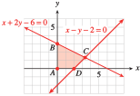

The last two inequalities, \(x\ge 0\) and \(y\ge 0\text{,}\) restrict the solutions to the first quadrant.
First, we graph the line \(x - y - 2 = 0\) and use the test point \((0, 0)\) to shade the half-plane, including the origin. Then we graph the line \(x - 2y - 6 = 0\) and again use the test point \((0, 0)\) to shade the half-plane below the line. The intersection of the shaded regions is shown below.

To find the coordinates of the vertices \(A\text{,}\) \(B\text{,}\) \(C\text{,}\) and \(D\text{,}\) we solve simultaneously the equations of the two lines that intersect at each vertex. Thus,
for \(A\text{,}\) we solve the system
\begin{align*}
x \amp= 0\\
y\amp =0
\end{align*}
for \(B\text{,}\) we solve the system
\begin{align*}
x \amp= 0\\
x + 2y \amp= 6
\end{align*}
for \(C\text{,}\) we solve the system
\begin{align*}
x + 2y \amp= 6\\
x -y \amp= 2
\end{align*}
to find \(\left(\dfrac{10}{3},\dfrac{4}{3} \right)\)
for \(D\text{,}\) we solve the system
\begin{align*}
y \amp= 0\\
x -y \amp= 2
\end{align*}
to find \(\left(2,0 \right)\)
The vertices are the points \((0, 0)\text{,}\) \((0, 3)\text{,}\) \(\left(\dfrac{10}{3},\dfrac{4}{3} \right)\text{,}\) and \((2, 0)\text{.}\)